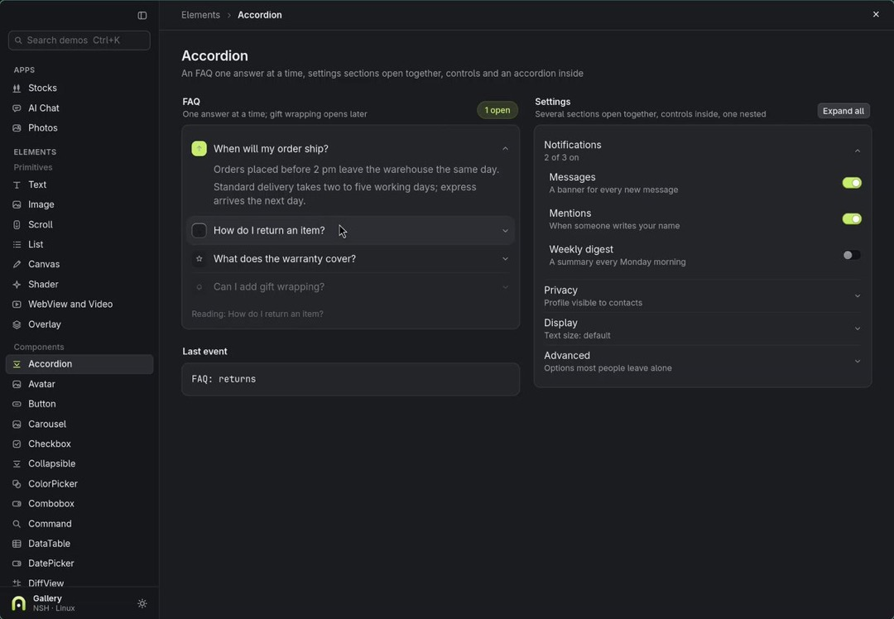
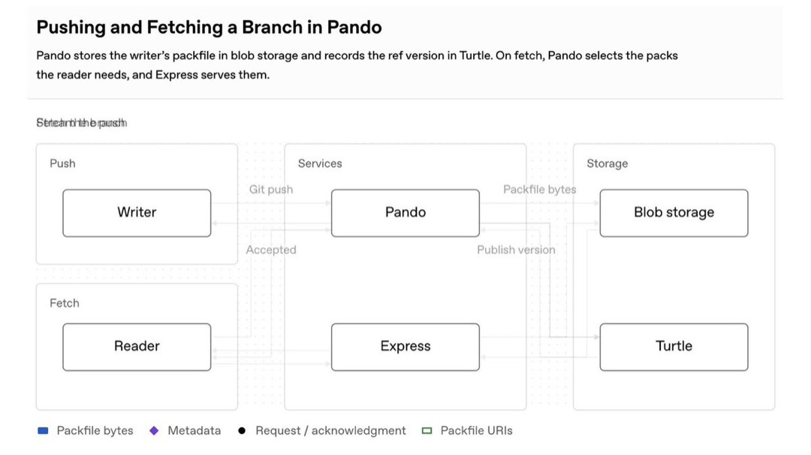
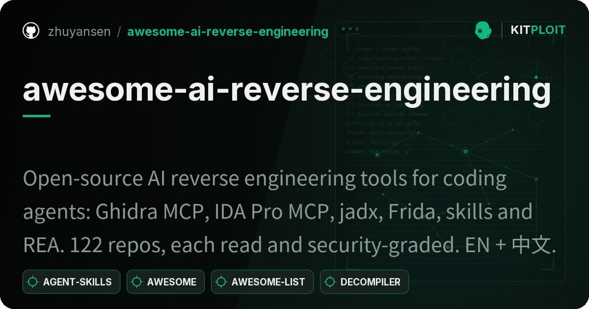

本期速览
03 红果超越豆包成字节第二大应用
05 Codex CLI新增网络诊断命令
07 Linux 7.4-rc1创最大合并窗口
08 电脑维修Skill配64套排障流程
09 GPT-6 Astra直改权重不需训练
11 Pando让Git推送延迟降近八成
01｜Cursor用忽略文件优化索引
来源（X） · @HunziDaily · 2026-11-03 13:40
写法跟 .gitignore 差不多，列进去的文件不会被它索引（具体覆盖范围看官方说明）。
我一般会放：
.env
*.pem
data/ 里的原始用户数据
logs/
少喂垃圾，回答更准；少喂隐私，心里更稳。
你的项目里有 .cursorignore 吗？
02｜GitHub Pages限额与自建部署
来源（X） · @williamlong · 2026-11-03 12:53
03｜红果超越豆包成字节第二大应用
来源（X） · @Sea_Bitcoin · 2026-11-03 14:04
字节外部：腾讯、字节跳动、阿里巴巴去重的总用户量分别为 12.80 亿、12.59 亿和 12.58 亿。字节超越腾讯成为第一，几乎没有疑问。
引用内容
Sea @Sea_Bitcoin
◦ 网文：番茄小说
◦ 创作过程：让豆包参与小说创作
◦ AI 视频制作：Seedance 视频生成模型
◦ 视频剪辑：剪映
◦ 剧情/切片分发和引流：抖音、今日头条 app
◦ 商城转化：抖音电商、支付
◦ 广告变现：字节广告体系、巨量引擎
04｜NSH补充headless基础组件层
来源（X） · @huacnlee · 2026-11-03 14:03
这类似 gpui-base，在 NSH 里面也有一层 nsh-base，为 NSH 应用开发提供 headless 的基础组件。
https://github.com/longbridge/nsh

05｜Codex CLI新增网络诊断命令
来源（X） · @ai_suxiaole · 2026-11-03 14:00
Codex CLI 0.166.0 新增网络诊断命令，可以检查配置、HTTP 连接和 Responses WebSocket，快速定位连接故障。
用法：
> 第一步：确认 CLI 版本
```bash
codex --version
```
确保版本至少为 `0.166.0`，旧版本不支持下面的网络诊断参数。
> 第二步：运行网络诊断
```bash
codex doctor --network-only
```
这条命令会自动检查：
- 配置：能否正常加载 Codex 配置
- 网络：当前网络环境是否正常
- HTTP：能否连接模型服务
- WebSocket：Responses WebSocket 是否能够正常建立连接
> 第三步：根据检查结果定位问题
不要一看到连接失败就重装 Codex，重点看是哪一项没有通过：
- 配置检查失败：检查 `config.toml` 等配置文件。
- HTTP 连接失败：检查代理设置和网络连通性。
- HTTP 正常，但 WebSocket 失败：重点检查代理或防火墙是否阻止了 WebSocket 升级连接。
特别注意：浏览器能打开网页，不代表 Codex CLI 就能正常连接模型服务。
> 第四步：导出诊断报告
如果需要把问题交给同事排查，可以使用 JSON 格式：
```bash
codex doctor --network-only --json
```
输出机器可读的脱敏诊断报告，方便进一步分析和定位问题。
> 陷阱
- 不要把登录成功当成模型连接正常，两者是不同的检查环节。
- 不要只检查 HTTP，WebSocket 连接也可能单独失败。
- 不要在没有定位问题前就重装 CLI 或反复修改配置。
- 旧版本不支持这条新增命令参数，记得先检查版本。
> 不要做什么
- 不要因为网页能打开，就认定网络没有问题。
- 不要 HTTP 连接失败和 WebSocket 连接失败都用同一种方式处理。
- 不要直接把完整环境配置和敏感信息发到公开评论区。
如果你的 Codex 也遇到过登录正常、却连不上模型的问题，可以运行这条命令看看具体卡在哪一步。
收藏起来，下次 Codex 连接异常时可以直接用。
06｜马来西亚成AI数据中心黑马
来源（X） · @nytchinese · 2026-11-03 14:00
07｜Linux 7.4-rc1创最大合并窗口
来源（X） · @sysxplore · 2026-11-03 13:33
中文译文
Linus Torvalds 表示 AI 推动了有史以来最大的一次 Linux 合并窗口，并且他认为这是一个好迹象。
Linux 7.4-rc1 已发布，包含近 20,000 次提交。正常的合并窗口大约引入 15,000 次提交。
Linus 直言不讳地说明了原因："我对涌入合并窗口的大量 AI 触发的工作感到*非常*满意，这总比它们主要以额外修复的形式出现在 -rc 阶段要好。"他称那是一种"健康得多的模式"，随后补充道："不过让我们看看各个 -rc 版本的表现如何。"
他表示这个版本"充满了 AI 发现的问题的修复"。更多的补丁也是由 AI 建议的，"尽管它们经常被重写"。部分规模也可能来自人们预期 7.4 将是下一个 LTS 内核。
完整 diff 中有整整三分之一是 AMD GPU 寄存器偏移量和位掩码。他的建议是："忽略这些噪音就好。"
如果这个周期按计划进行，Linux 7.4 正式版应该在 12 月 20 日左右发布。
原文
Linus Torvalds says AI drove the biggest Linux merge window yet, and he's calling it a good sign.
Linux 7.4-rc1 is out with almost 20,000 commits. A normal merge window brings in about 15,000.
Linus was blunt about why: "I'm *much* happier with the flood of AI triggered work going into the merge window than it showing up mainly as extra fixes during the -rc period." He called that "a much healthier model", then added: "But we'll see how the -rc's look."
He says the release is "full of fixes for issues found by AI". More patches are AI-suggested too, "although they often get rewritten". Some of the size may also come from people expecting 7.4 to be the next LTS kernel.
A full third of the diff is AMD GPU register offsets and bit masks. His advice: "Just ignore the noise."
If the cycle stays on schedule, Linux 7.4 final should land around December 20.
08｜电脑维修Skill配64套排障流程
来源（X） · @GitHub_Daily · 2026-11-03 13:30
电脑卡顿、没声音、连不上网，以及应用迁移、数据恢复都有对应流程，覆盖 Windows、macOS 和 Linux。
GitHub：https://github.com/88lin/computer-repair-skill
我比较认可它先查再改的做法。检查时先读系统状态，涉及删除、重启、分区这些操作，会列出影响和恢复方案，确认后再动手。
查磁盘空间时，还会继续往大文件夹里找，区分能重新生成的缓存、代码仓库数据和模型文件，清理后核对实际释放的空间。
装成 Skill 就能用，不需要另外装桌面软件或接专用云服务。查什么问题才读对应的维修流程，不会一次塞入整套手册。
09｜GPT-6 Astra直改权重不需训练
来源（X） · @AI_Whisper_X · 2026-11-03 13:27
真的是能在每个热点 都找到一个自己之前做过的工作，然后说我做过这个。。。。
又让他蹭上了
这是今天在国内外都爆火的，也补充下背景：
MIT CSAIL 的 Omar Khattab 团队发现，前沿大模型能直接读写神经网络权重。GPT-6 Astra 只看原始权重就能判断一个网络是训练来干什么的，还能不靠任何环境反馈，从零写出小型游戏网络，表现超过用 PPO 训练 1 亿步的网络。
他们让 Astra 改进 Qwen3.5-0.8B 的数学能力，全程不算梯度、不做训练。Astra 在权重里找到了导致推理死循环的问题（Qwen 的模型卡里也提醒过这个问题），只改了 0.016% 的权重：同样的采样设置下，MATH-500 从 7.9% 涨到 48.1%，没专门针对的指令遵循 IFEval 也提高了 3 倍。
引用内容
Jürgen Schmidhuber @SchmidhuberAI
中文译文
这已经是老黄历了。这正是 1990 年代神经快速权重编程器所做的事情（包括 1991 年的未归一化线性 Transformer）。附有原始论文链接的概述：https://people.idsia.ch/~juergen/fast-weight-programmer-1991-transformer.html
原文
This is an old hat. That's exactly what the neural fast weight programmers did in the 1990s (including the 1991 unnormalised linear Transformer). Overview with links to the original papers: https://people.idsia.ch/~juergen/fast-weight-programmer-1991-transformer.html
10｜Android仅充电模式数据传输极难
来源（X） · @chenshaoju · 2026-11-03 13:22
不过针对复杂攻击（如ChoiceJacking/充电端模拟成鼠标键盘操作手机），在有风险的环境下，仍建议优先使用仅充电线或数据阻断器。👀
引用内容
华尔街观察 Xtrader @cnfinancewatch
11｜Pando让Git推送延迟降近八成
来源（X） · @dotey · 2026-11-03 13:09
OpenAI 11 月 2 日发文介绍 Pando，一套自研的 Git 服务器后端。上个月 13 日，Anthropic 也发文介绍了自研的源代码管理系统 Scion。
两家碰到的是同一个问题：AI agent 写代码太快，管代码的系统成了整个公司开发速度的瓶颈。两家的解法方向相反。
先交代一下 Git：它是程序员管理代码版本的工具。每次改动存成一个“提交”，推送（push）到公司服务器，同事再从服务器拉取（fetch）。“分支”是同一份代码的平行草稿，各改各的，改好再合并进主线。两家都把全公司的代码放在同一个大仓库里，业内叫 monorepo。
OpenAI 的路线是改造 Git。
工程师和 agent 还是敲 git push、git pull，只把服务器换成 Pando。推送代码的中位等待时间缩短近 80%，每天往外分发近 1PB（约 100 万 GB）代码数据。
Anthropic 的路线是替换 Git。
Scion 有自己的客户端和服务器，提交、合并都在服务器上完成，配套的代码审查、代码搜索工具也是自己写的。CI（每次改动后自动构建和测试的流程）拉代码从几分钟变成几秒，服务器占用的 CPU 和内存只有原来那套的 1/200。
两套系统都不对外提供。
OpenAI 说正在研究怎么把 Pando 的技术提供给用户，过程中给 Git 修的问题已经提交给 Git 官方，有几项进了正式版。
Anthropic 说 Scion 只适合巨型代码仓库，用它得把代码审查、搜索、CI 全部换掉，别的公司很难直接用，所以只分享设计思路，希望 GitHub、GitLab 和开源社区吸收其中有用的部分。
如果你的团队用 GitHub 或 GitLab，OpenAI 这条路离你更近：改进直接进 Git，工具链不用换。两家都认为别的公司迟早会碰到同样的问题，Anthropic 预计未来 6 到 12 个月这类问题会更常见。
【Git 为什么扛不住】
提交量涨得太快。以 2024 年第一季度为基准，OpenAI 合入主线的提交数到 2026 年第三季度涨到近 15 倍，第四季度预计约 25 倍。Anthropic 每天合入的改动，5 月约 2500 个，9 月超过 3 万个，4 个月变成原来的 12 倍多。
压力会叠加：一个工程师同时有好几个改动等着测试，每推送一次，又有好几个测试任务去拉同一份代码。
OpenAI 从去年年底开始拉代码、推代码都变慢，合并经常失败，可靠性一度低于 90%，相当于每 10 次操作有超过 1 次出问题。
Anthropic 的主线历史接近 100GB，压缩后的工作副本超过 25GB，光 CI 每天就要拉约 2500 万次代码，全量下载的话每天超过 600PB。它最多时开了几百台 Git 镜像服务器分担压力，越来越难维护。
Anthropic 总结了根本原因：Git 的设计假设每个人都离线工作，所以每人手里都要有一份完整仓库。现在拉代码的大多是 agent 和自动任务，它们一直联网，背着整个仓库跑反而成了负担。
【写代码：别让所有人排一条队】
多人同时推送时，服务器要保证每个分支“现在指向哪个提交”的指针（Git 里叫 ref，可以理解成书签）不被改乱。
OpenAI 评估过两种常见做法，都要让整个仓库的改动排成一条队。
一种是三阶段提交（3PC）：几台服务器各存一份完整仓库，每次推送要过半数服务器同意，分三轮来回确认，推送量一大，各台服务器的硬盘先忙不过来。
另一种是预写日志（WAL）：所有改动先记进一本共享的流水账，再照着执行，不管改哪个分支都要抢着往同一本账上写，账记得太快，服务器又来不及照着更新，别人拉到新代码要等更久。
Pando 的办法是每个分支各管各的。
推 A 分支和推 B 分支互不等待，只有两个人同时推同一个分支才会冲突。代价是同时看好几个分支，看到的可能是各自不同时刻的状态。OpenAI 说，人和 agent 实际只关心单个分支的前后顺序。
Anthropic 走得更远：提交直接在服务器上生成，没有推送这一步，每次提交只记哪些文件变了。
Scion 尽量少用分支，主线和发布分支之外基本不用，因为所有服务器都要对分支状态达成一致，规模一大就是麻烦。两家最后都把移动书签简化成一次“比较并替换”操作，Pando 改的是一个键，Scion 改的是数据库里的一行。
Anthropic 还取消了合并前的全局排队。传统做法是合并时锁住仓库，一个个测完再放行。Anthropic 说测试还没跑完，已经有成百上千个改动合进去了，排队没法做，于是改成合并后、上线前再自动测试。同时合入的改动可能冲突，Claude 修冲突的速度通常比人发现冲突还快。
【拉代码：别给每个人现场打包】
传统 Git 服务器给每个来拉代码的人现场算一个专属压缩包（packfile，Git 把一批文件压在一起的格式，相似文件只存差异），只装对方缺的部分。来的人一多，CPU 和硬盘就扛不住。两家都绕开了这一步，方法相反。
Pando 像发统一包装的快递箱：推送者上传的压缩包原样存起来，谁要就发谁，服务器几乎不用计算。
为了让包人人能用，推送时只让客户端对照主干打包：主干上已有的内容一律不装，包里只有这个分支改过的文件、对应的目录清单和提交记录，压缩后中位数不到 20KB。
后台再把小包逐级合并成大包，免得落后几天的人要下几万个小文件。代价是客户端偶尔会多下一些已有的内容。
Scion 像超市自取：完全不用压缩包，客户端缺哪个文件就要哪个文件。
每个文件按内容算出一个编号，内容一变编号就变，同一编号的文件永远不变，所以任何一层缓存都能直接回答，不用跟其他服务器核对。
客户端还可以只取自己需要的目录，或者等真读到某个文件时再下载。
两家的缓存命中率都超过 99%。
【结果，以及谁做出来的】
OpenAI：推送中位等待时间缩短近 80%，用少量 CPU 核心每天分发近 1PB，最高一小时发出 57TB。用普通云服务器测试，拉代码能跑满 10Gbps 的网络带宽。
Anthropic：服务器 CPU 和内存占用是原来 Git 镜像的 1/200，CI 和研究任务拉代码快了两个数量级（约 100 倍），光 CI 就省下 25% 的 CPU。
两套系统都是 AI 写的。
Pando 从立项到上线用了 10 周，核心设计出自一名工程师，代码主要由 Codex 驱动的 agent 写，几名工程师负责部署，今年 4 月开始承接生产流量。
Scion 由 7 个人用 5 个月做完，同期还做了代码审查工具 Antique 和另外五六个系统，并完成整体迁移。
Anthropic 原先手写了一版把 Git 数据导入 Scion 的程序，交给内部早期版本的 Claude Mythos Preview 重写，内存占用降到 1/20，速度快了 4 倍。
Anthropic 的工程师说，Claude 写代码已经比他们强，他们的价值在于把握系统设计和取舍，很多时候是对 Claude 说“不”：agent 会为了套用某种做法而违反系统的核心约束，也会为了假想的风险堆太多防御代码。
原文：
OpenAI《Scaling Git at OpenAI》https://openai.com/index/scaling-git-at-openai/
Anthropic《Redesigning source control at Anthropic》https://www.anthropic.com/research/redesigning-source-control
OpenAI 官方推文：https://x.com/OpenAIDevs/status/2117408792346509663

引用内容
OpenAI Developers @OpenAIDevs
中文译文
我们构建了 Pando，一个用于我们 monorepo 的全新 Git 后端，以处理更多的 push 和 fetch，而不改变工程师和 agent 使用 Git 的方式。
Pando 将 push 延迟降低了约 80%，现在每天服务近一 PB 的 Git 数据。我们可以随着 agent 使用量的增长而扩展 Git 容量。
原文
We built Pando, a new Git backend for our monorepo, to handle more pushes and fetches without changing how our engineers and agents use Git.
Pando cut push latency by ~80% and now serves nearly a petabyte of Git data a day. We can grow Git capacity alongside agent usage.
12｜awesome AI逆向工程工具122个
来源（X） · @KitPloit · 2026-11-03 13:20
中文译文
awesome-ai-reverse-engineering — 面向 coding agent 的开源 AI 逆向工程工具：Ghidra MCP、IDA Pro MCP、jadx、Frida、skills 和 REA。122 个仓库，每个都经过阅读和安全评级。英文 + 中文。https://ktp.sh/FW2tuvvqlp
原文
awesome-ai-reverse-engineering — Open-source AI reverse engineering tools for coding agents: Ghidra MCP, IDA Pro MCP, jadx, Frida, skills and REA. 122 repos, each read and security-graded. EN + 中文. https://ktp.sh/FW2tuvvqlp
